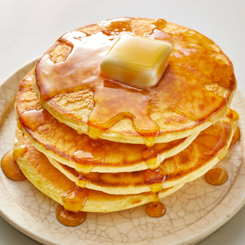

Old Fashioned Pancakes

Ingredients:
- 1,5 cups all-purpose flour
- 3,5 teaspoons baking powder
- 0,25 teaspoon salt, or more to taste
- 1 tablespoon white sugar
- 1,25 cups milk
- 1 egg
- 3 tablespoons butter, melted
Directions:
- In a large bowl, sift together the flour, baking powder, salt and sugar. Make a well in the center and pour in the milk, egg and melted butter; mix until smooth.
- Heat a lightly oiled griddle or frying pan over medium-high heat. Pour or scoop the batter onto the griddle, using approximately 1/4 cup for each pancake. Brown on both sides and serve hot.
Back to homepage
Return to top